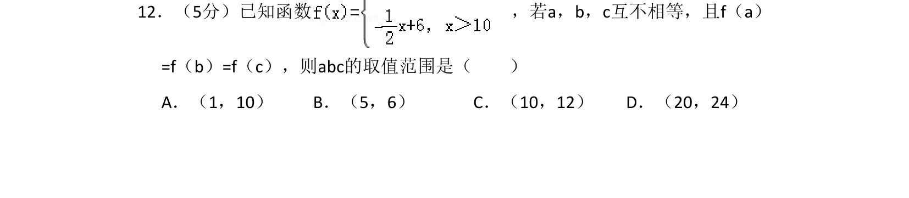
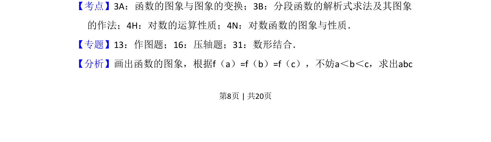
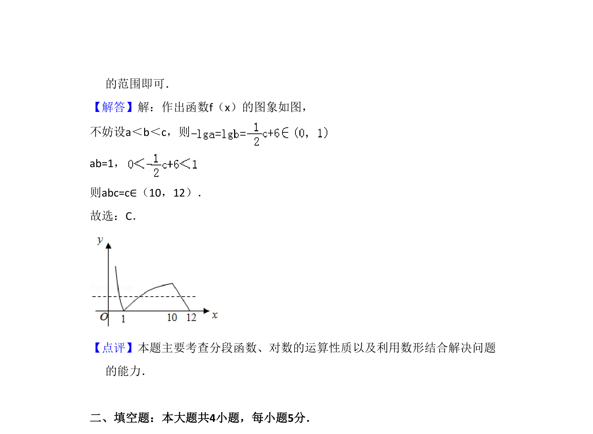

考点：分段函数 对数函数 函数图象 数形结合

本题考查分段函数与对数函数图象性质，利用数形结合求参数乘积的取值范围。


📄 原 PDF 第 8 页：
素材/真题/吉林/2008-2024·（吉林）数学高考真题/2010年高考数学试卷（文）（新课标）（解析卷）.pdf
12．（5分）已知函数 ，若a，b，c互不相等，且f（a） =f（b）=f（c），则abc的取值范围是（ ） A．（1，10）B．（5，6）C．（10，12）D．（20，24）
【考点】3A：函数的图象与图象的变换；3B：分段函数的解析式求法及其图象 的作法；4H：对数的运算性质；4N：对数函数的图象与性质．菁优网版权所有 【专题】13：作图题；16：压轴题；31：数形结合． 【分析】画出函数的图象，根据f（a）=f（b）=f（c），不妨a＜b＜c，求出abc